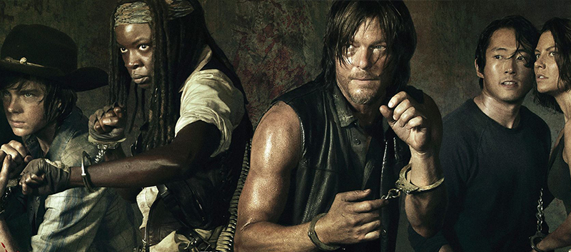

La saison 5 de The Walking Dead sera diffusé le 12 octobre sur AMC. Grâce au trailer, nous savons d’ores et déjà que les survivants vont sortir du Terminus. Ce même trailer tend à nous faire croire qu’ils seront tout de même sous l’autorité de Garett. Cependant, nous pouvons contraster cette dernière information.

Gale Anne Hurd, la productrice du show, a décidé de nous en dire un peu plus sur ce qui nous attend. Vous le savez, on nous a promis beaucoup d’action pour cette cinquième saison. Gale Anne Hurd le confirme en déclarant que « la scène où les survivants s’échappent du Terminus est un moment particulièrement bad ass ».Ces propos nous mettent vraiment l’eau à la bouche, d’autant plus que notre cher Robert Kirkman en remet une couche !